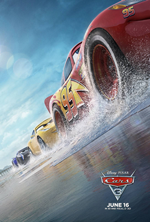

The Cars franchise wasn't doomed from the start
posted 28/04/21

I honestly don't know why, of all the Pixar movies I could discuss, I chose these godforsaken movies. Everyone pretty much agrees that this is the bottom of the barrel for Pixar, and I'm not about to sit here and argue otherwise. But I have seen people argue that the franchise itself was a bad move to begin with, and I disagree; moments in Cars and Cars 3 show potential for what could have been pretty fun, enjoyable, and interesting animated films. Groundbreaking? Probably not. But Monsters Inc. isn't that groundbreaking, and that movie still holds up as one of my personal favorites.
So what do the cars represent? Why cars? I never really pondered this question for the first two Cars films, probably because I was just an idiot child enjoying the pretty colors and HILARIOUS jokes. But when I saw Cars 3, it struck me: the Cars universe is actually a pretty cool analogy for sports. Especially with the subject matter in Cars 3, it would be so hard to tell a story involving injuries and physical regimen and aging players with humans, and keep it lighthearted and intuitive for kids. But with cars it's simple, and the analogy works fairly well.
Cars 1 sort of leans into this, but it's certainly arguable that they didn't need to be cars for this film. It keeps the Hudson injury from feeling too dark or real considering the film's tone, but that's about it. And Cars 2, don't get me started on Cars 2. Obviously that movie doesn't lean into the sports thing at all, using cars to tell a spy story is a ridiculously dumb idea.
But I wouldn't say that these movies suffer because they're cars; I honestly feel like their character designs get way too much crap. No, these movies suffer mostly because the humor doesn't land, the dialogue is pretty bland, and Mater is perhaps the worst character in all of Pixar (especially in the second film).
Cars 3 does a much better job of leaning into this, and I'd argue it's the best film in the series. With no context, the story itself is really compelling: an aging athlete pushes their body to its limits and gets injured, struggles to accept their time in the spotlight is fading, and learns to both adapt to the world around him and then let go and find a new role as a coach. And like I said earlier, imagine how much more somber this movie would be if it was told with humans. I'm not saying the idea of using of cars is revolutionary or enhances the story. But for a family movie, it's a pretty good choice that doesn't detract from the story.
Now, Cars 3 isn't all that great, but again it's for the similar reasons as Cars 1: very little humor throughout the movie, bland, somewhat cheesy dialogue, and a weird detour in their adventure to some figure 8 race that's pointless and kills the pacing of the film. But with some more care and refinement, Cars 3 could have been a really good film. So could Cars 1. And so could... no Cars 2 was dead at its conception, can't defend that one.